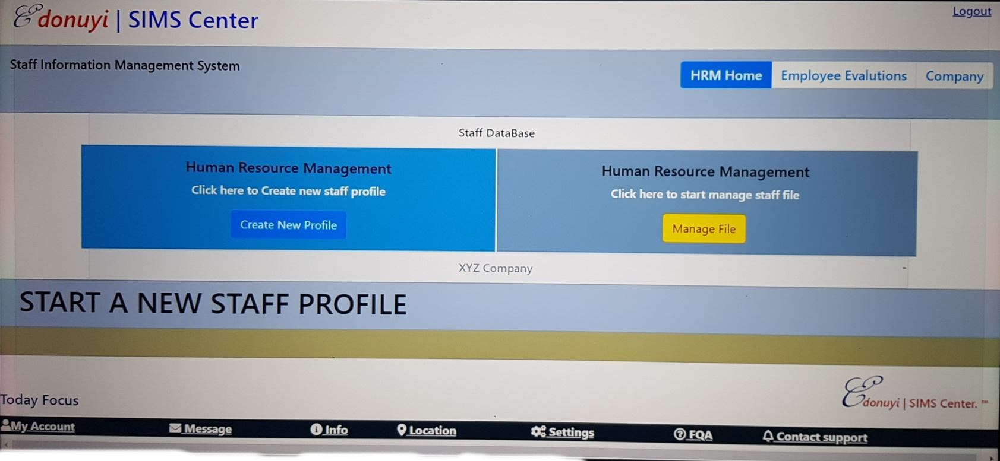

Weather Journal App. Uses openWeatherApi to access weather data with Zipcode target.

A TODO app built with Postgres Express, React and Nodejs.

A Staff Data Management Solution App designed with HTML/Bootstrap

A page section of Excercise Tracker app build with MongoDB, Express, React and Nodejs

Website designed with bootstrap Library on pure HTML